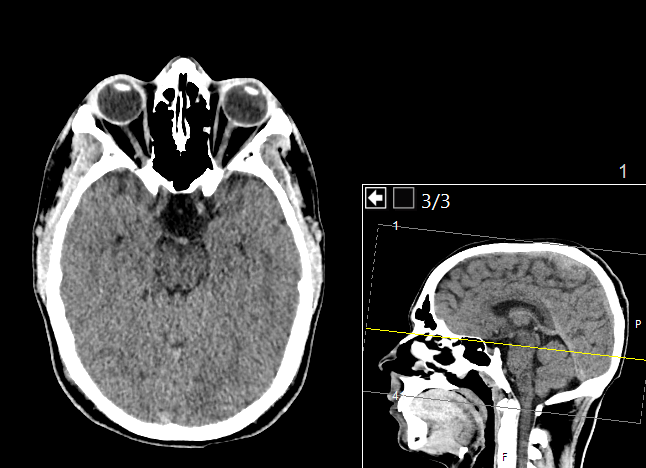

跑通规则奖励的离线测试
抽出公开代码里的奖励函数，构造答对、答错和格式异常的回答，检查两项奖励如何变化。字符串匹配实验绕开了符号验证分支。
查看核对的代码版本 ↗医学多模态 · 工程验证
从识别影像到定位解剖结构，选一道题试试看。再改写一条候选回答，观察评分规则和 GRPO 组内优势，最后用热图探索跨任务结果。
HEAD / AXIAL

医学视觉问答
切换问题，看看哪些线索来自图像。这里选中的题目也会用于下方的奖励实验。
GRPO 奖励实验
GRPO 比较同一题的一组回答。试试只写答案、少一个标签或在末尾加换行，观察答案奖励、格式奖励和组内优势分别怎么变。
回答原文 · ↵ 表示换行
跨任务评估
在一种任务上训练，在另一种任务上测试。点击矩阵中的一格查看这一方向的变化。右侧宏平均给每个组合相同权重，数据来自原论文的 Qwen2.5-VL-3B 实验。
数据来源 论文跨任务实验表 ↗
20 个跨任务组合的宏平均
当前选中的迁移方向
项目工作
抽出公开代码里的奖励函数，构造答对、答错和格式异常的回答，检查两项奖励如何变化。字符串匹配实验绕开了符号验证分支。
查看核对的代码版本 ↗从论文转录 Think、No-Think、Think-After 的准确率矩阵，分别核算全部组合和非对角组合的宏平均，并查看单个迁移方向的变化。
查看论文中的实验表 ↗疾病诊断训练集与解剖识别测试集有 254 个共同图像路径，涉及 256 条测试问答。这个检查覆盖路径层面的重叠。患者级独立性需要额外核验患者 ID。
查看公开数据划分 ↗影像题和候选回答是演示样例。奖励回放依据公开实现，准确率矩阵为论文实验数据。